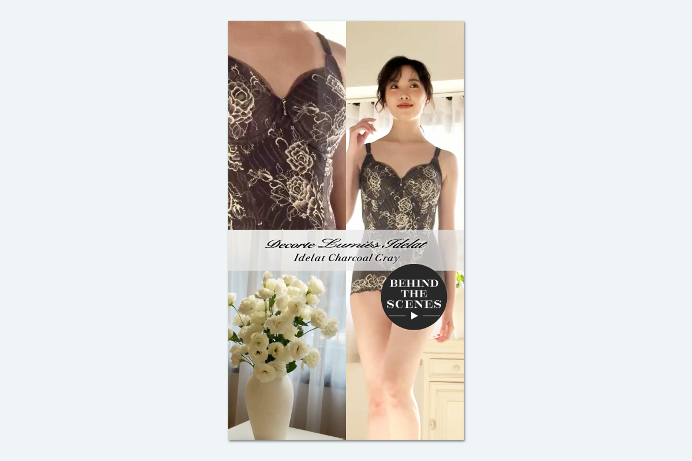

デコルテ リュミエス イデラ チャコールグレー リール動画

▶
...
Instagram投稿
| 制作期間 | 2026年8月 |
| 制作時間 | 約10時間 |
| 依頼元 | MARUKO |
| 媒体 | 動画、Instagram（リール） |
| 使用アプリ | Adobe Express、Premiere Pro |
制作背景・意図
撮影現場のシーンをサブで動画編集しました。撮影には立ち会っていませんがモデルさんの強気な表情の良さは先に投稿されている商品PVには無い画力があると思い、表情豊かな部分をピックアップ。また、花や陰影のある素材もインサートとして撮影されていたので使用し、場面転換を多めに取り入れて短くても動きで魅せる動画にしてみました。
BGMはボディデザインウェアのレースやモデルの雰囲気にマッチした上品かつモダンなLo-Fi系をセレクトし、Adobe Expressで簡単にアニメーションで動画を動かしました。Premire Proだと時間のかかる動きも、Expressで微調整の上、簡易的に編集。チャコールグレーの由来や開発における特長も、テキストを英字であしらうことで印象的にしました。